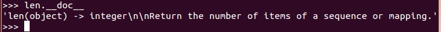
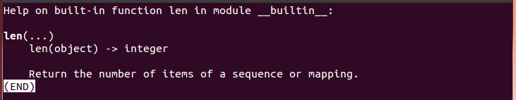
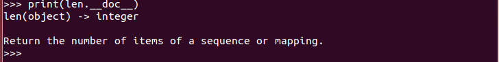
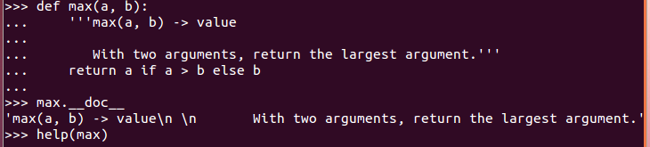
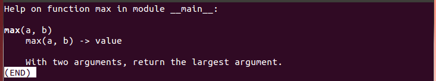
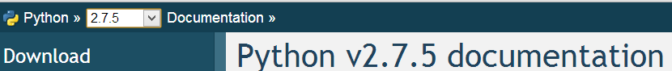
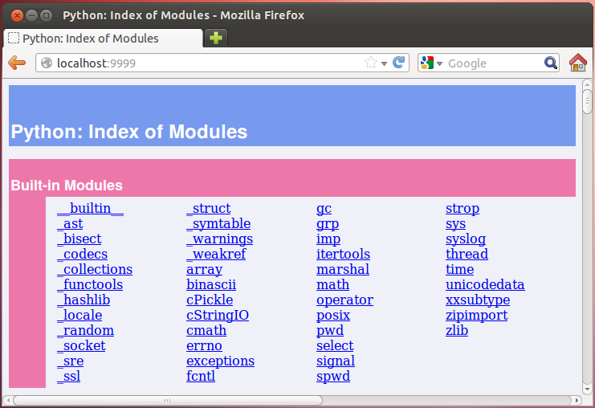
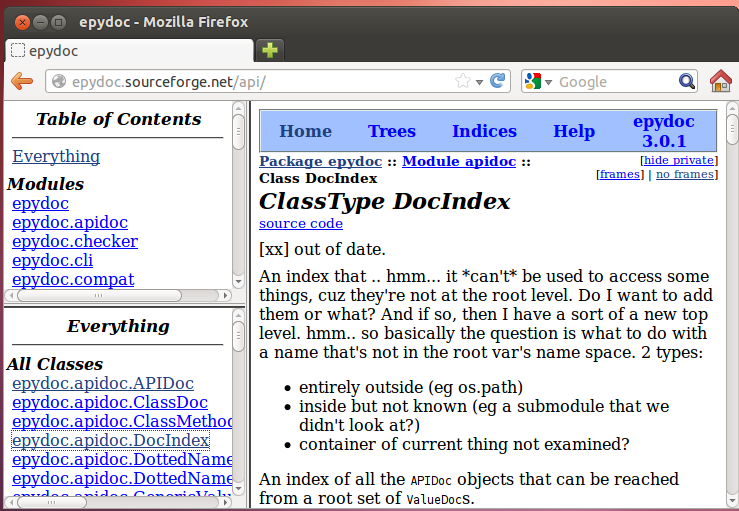

認識一門語言，不能只是學習語言的語法，更要逐步深入瞭解語言背後的社群與文化，要瞭解語言的社群與文化，最好的方式就是從認識語言創建者開始，瞭解語言設計的理念，接著從社群網站出發，尋獲更多可以瞭解並參與社群的資源。
Python 之父 Guido van Rossum

使用 Python 可別不認識 Python 的創建者 Guido van Rossum（也千萬別寫 這種信 給他），Guido 是首位享有 BDFL 封號的開放原始碼軟體創建者，BDFL 全名為 Benevolent Dictator For Life，中文常翻為「仁慈的獨裁者」，意思是擁有這類稱號的開放原始碼軟體創建者，對社群仍持續關注，在必要時會針對社群中的意見與爭議提出想法與做出最後決定。
Guido 在 2005 年至 2012 年曾受雇於 Google，大半時間在維護 Python 的開發，2013 年之後離開 Google 進入 Dropbox，除了可以在 官方個人頁面 找到他之外，他也常在 Google+ 專頁 發表他的動態。
Python 軟體基金會
Python Software Foundation 常簡稱為 PSF，主要任務為推廣、維護與促進 Python 程式語言的發展，同時也支持協助全球各地各式各樣 Python 程式設計師與社群的成長。PSF 是符合美國國內稅收法（Internal Revenue Code, IRC）中 501(c) 條款的非營利組織，持有 Python 程式語言背後的智慧財產權。Python 改進提案
Python Enhancement Proposals 常簡稱為 PEPs，Python 的改進大多是由 PEP 流程主導，PEP 流程會收集來自社群的意見，為將來打算加入 Python 的新特性提出文件提案，重要的 PEP 會經由社群與 Guido 審閱與評估，決定是否成為正式的 PEP 文件。因此 PEP 文件本身說明了它對 Python 的改變，以及實作特性時應遵守的標準，在剛開始認識 Python 時，有幾個重要的 PEP 是必須認識的：
- PEP 1 - PEP 的作用與執行準則，說明了何為 PEP、PEP 的類型、提案方式等。
- PEP 8 - Python 的程式碼風格，包括了程式碼的編排、命名、註解等風格指引。
- PEP 20 - Python 禪學（The Zen of Python），也就是 Python 2 Tutorial 第二堂（2）中執行
import this時，可以看到的話語。 - PEP 257 - 撰寫 Docstrings 時的慣例，Docstring 是可內建於 Python 程式中的說明文件字串，稍後就會說明。
Python Conference
全世界各地都有 Python 使用者，這些使用者會在各地舉辦各式大大小小的研討會，如果想要知道各地的研討會資訊，可以從 PyCon 這個網站開始，它列出了全球各地 Python 研討會的網址、活動日期等資訊。在這個網站上，你可以找到 "PyCon Taiwan" in Taiwan，連結至網站之後，你可以看到台灣 Python 社群關心的重要研討會訊息。
Python 使用者群
除了研討會之外，Python 使用者會舉辦週期性的聚會，你可以在 LocalUserGroups 上找到全球各地的 Python 使用者聚會資訊，以台灣來說，撰寫文章的此時擁有的週期性聚會資訊有：- PyTUG Wiki - 台灣 Python 使用者群 Wiki 網站
- PyTUG Groups - 台灣 Python 使用者群論譠
- PyHUG Meetups - 新竹 Python 使用者群
- Taipei.py Meetups - 台北 Python 使用者群
- Tainan.py Meetups - 台南 Python 使用者群
Python 的文件
Python 的官方網站是 http://www.python.org，不少文件資源等，都可以在官方網站上尋得。對於 API 的使用，實際上，Python 的 API 本身就附有文件，舉
len 函式來說，如果你在互動模式中鍵入 len.__doc__ 會發生什麼事呢？  {kind=link}
這字串很奇怪？如果鍵入
help(len) 就不會覺得奇怪了：  {kind=link}
實際上，
help 函式會取得 len.__doc__ 的字串結果並顯示出來，就類似於你執行 print(len.__doc__) 的結果： 
{kind=link}
透過
len.__doc__ 取得的字串稱為 DocStrings，你可以為 API 定義自帶的文件資訊。例如，試著在互動模式中鍵入以下程式碼：
def max(a, b):
'''max(a, b) -> value
With two arguments, return the largest argument.'''
return a if a > b else b
'''__doc__ 屬性值，因此接下來，如果你鍵入 max.__doc__ 或 help(max)，將會看到以下畫面： {kind=link}

{kind=link}
先前談到，PEP 257 中說明了撰寫 Docstrings 時的慣例，你可以在當中取得更多撰寫 Docstrings 的資訊。
談到文件，Python 官方網站的文件是列於 http://docs.python.org，連上後目前預設會顯示 Python 3 的文件，你可以於網站左上角選擇想要閱覧的 Python 版本：

{kind=link}
在完成本課程後，建議可以繼續閱讀網站上的 Tutorial，當然，先前 Python 2 Tutorial 第一堂（3） 中談到的 distutils，在網站上也有 Distributing Python Modules 文件可以進一步閱讀。如果想查詢 API 文件，則可以從 The Python Standard Library 開始。
除了連上網站查詢 API 文件之外，由於 Python 的標準 API 都有撰寫 Docstrings，你還可以使用
pydoc 指令來讓你閱讀 Docstrings 時更為便利，例如，執行 pydoc -p 9999 之後，會啟動一個簡單的 pydoc 伺服器，接下來可利用瀏覽器連結本機 localhost:9999 查看文件： 
{kind=link}
如果你跟我一樣，是個熟悉 Java 的使用者，也許會比較習慣 JavaDoc 的風格，那麼可以試著使用 EpyDoc，它文件的風格很類似 JavaDoc，例如，線上版本的 EpyDoc 風格如下：

{kind=link}
瞭解了 Python 的文件資源之後，接下來要來介紹更多實用的 API 了，下個主題會是一些資料處理的相關函式介紹。